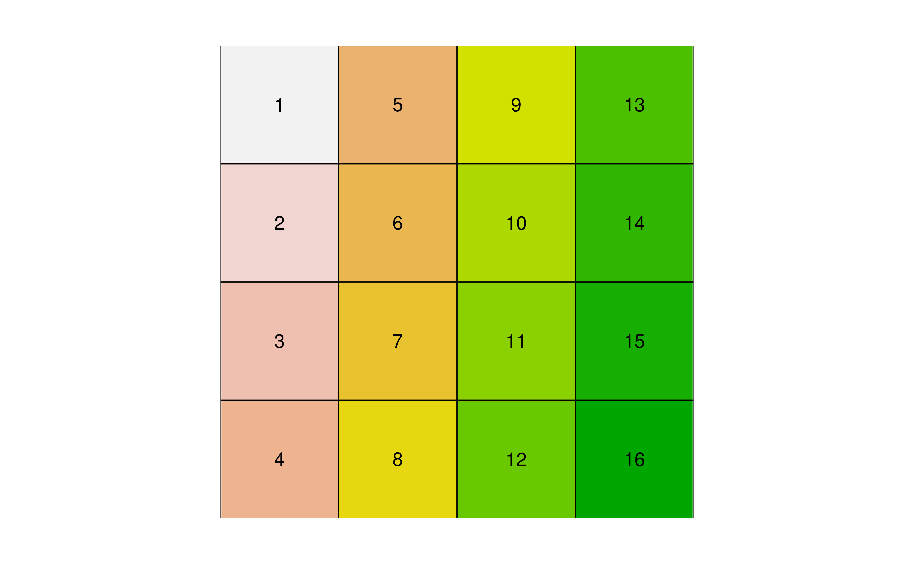

Lately, I was working on a project and I needed to change the spatial resolution of a GeoTIFF to match that of another one. After looking around, I posted a question on Stackoverflow. After experimenting around, I decided to blog about my experience of changing the spatial resolution of GeoTIFF rasters.
In this post, we will explore two ways to change the spatial resolution of a raster:
- Aggregating/disaggregating pixels.
- Resampling pixels from one geometry to another one.
Aggregating a raster
I like to think that aggregating is the process of combining/merging the pixels of a raster and hence reducing its spatial resolution. When combining a set of neighbour pixels into a single pixel, one needs to define the statistical summary to be applied to the ensemble of the combined pixel. Such function can be the mean, median, min, maximum or any other function that produces a single numerical value.
Let’s see how aggregation works using the terra R package. First, I will make a function that will be used to quickly display the pixel values of a raster.
For simplicity purposes, I will create a 4 by 4 raster containing values between 1 and 16.
library(terra)
# Create a 4 x 4 matrix
m <- matrix(1:16, ncol = 4, nrow = 4)
# Convert the matrix into a raster
r16 <- rast(m)
r16
#> class : SpatRaster
#> dimensions : 4, 4, 1 (nrow, ncol, nlyr)
#> resolution : 1, 1 (x, y)
#> extent : 0, 4, 0, 4 (xmin, xmax, ymin, ymax)
#> coord. ref. :
#> source : memory
#> name : lyr.1
#> min value : 1
#> max value : 16Using plot_raster(), we can display the value of each pixel within the raster.
plot_raster(r16)
Imagine now that we would like to aggregate the raster r16 so it becomes a raster of 2 by 2 (i.e. 4 pixels). To achieve this, we can combine pixels 2 by 2 (horizontally and vertically) using the aggregate() function and the argument fact = 2.
# Aggregate the raster using 2 pixels within the horizontal and the vertical directions
r4 <- aggregate(r16, fact = 2)
r4
#> class : SpatRaster
#> dimensions : 2, 2, 1 (nrow, ncol, nlyr)
#> resolution : 2, 2 (x, y)
#> extent : 0, 4, 0, 4 (xmin, xmax, ymin, ymax)
#> coord. ref. :
#> source : memory
#> name : lyr.1
#> min value : 3.5
#> max value : 13.5
plot_raster(r4)
What happened is that, by default, the aggregate() function is using the mean() function to summarize the pixel values. Hence, the upper left pixel has a value of 3.5 which correspond to the average of 4 pixels (1 + 5 + 2 + 6) / 4 = 3.5. As mentioned previously, one can use any function that returns a single value such as the min() function.
# Aggregate using the min() function
plot_raster(aggregate(r16, fun = "min"))Disaggregating a raster
If aggregating is the process of combining pixels, disaggregating is the process of splitting pixels into smaller ones. This operation is done with disagg(). Using the original 4 x 4 r16raster, each pixel will be disaggregated into 16 smaller pixels, once again using the fact argument.
r256 <- disagg(r16, fact = 4)
r256
#> class : SpatRaster
#> dimensions : 16, 16, 1 (nrow, ncol, nlyr)
#> resolution : 0.25, 0.25 (x, y)
#> extent : 0, 4, 0, 4 (xmin, xmax, ymin, ymax)
#> coord. ref. :
#> source : memory
#> name : lyr.1
#> min value : 1
#> max value : 16Here, each pixel of the original r16 raster is divided into 16 smaller pixels (4 x 4), giving a total of 256 pixels (16 x 16).
plot_raster(r256)
Resampling
Resampling is the process of transferring the values from a raster into another raster that does not have the same geometry (i.e. cell size). This is often the case when working with remote-sensing products that are derived from sources with different spatial resolutions. For the following examples, I will use data from Sentinel-2 (10 meters resolution) and Landsat-8 (30 meters resolution). Both scenes are from the same area and https://www.gisagmaps.com/l8-s2-comparison-and-download/. Raster files can be downloaded on https://www.gisagmaps.com/l8-s2-comparison-and-download/L8_S2_080415_Comparison.zip. Images contain the top of atmosphere (TOA) reflectance and we will use the RGB bands.
s2 <- rast(fs::dir_ls("data/L8_S2_080415_Comparison/S2_080415_TOA"))
s2
#> class : SpatRaster
#> dimensions : 451, 451, 3 (nrow, ncol, nlyr)
#> resolution : 10, 10 (x, y)
#> extent : 282040, 286550, 4564930, 4569440 (xmin, xmax, ymin, ymax)
#> coord. ref. : WGS 84 / UTM zone 17N (EPSG:32617)
#> sources : S2_B2_10m_080415_TOA.tif
#> S2_B3_10m_080415_TOA.tif
#> S2_B4_10m_080415_TOA.tif
#> names : S2_B2_10m_080415_TOA, S2_B3_10m_080415_TOA, S2_B4_10m_080415_TOA
l8 <- rast(fs::dir_ls("data/L8_S2_080415_Comparison/L8_080415_TOA"))
l8
#> class : SpatRaster
#> dimensions : 150, 150, 3 (nrow, ncol, nlyr)
#> resolution : 30, 30 (x, y)
#> extent : 282045, 286545, 4564935, 4569435 (xmin, xmax, ymin, ymax)
#> coord. ref. : WGS 84 / UTM zone 17N (EPSG:32617)
#> sources : L8_B2_080415_TOA.tif
#> L8_B3_080415_TOA.tif
#> L8_B4_080415_TOA.tif
#> names : L8_B2_080415_TOA, L8_B3_080415_TOA, L8_B4_080415_TOAWe can easily see the difference in spatial resolution between the two images.
par(mar = c(1, 1, 3, 1), oma = c(1, 1, 3, 1))
plotRGB(s2, 3, 2, 1, stretch = "lin")
mtext("Sentinel-2 (10 meters)", side = 3)
par(mar = c(1, 1, 3, 1), oma = c(1, 1, 3, 1))
plotRGB(l8, 3, 2, 1, stretch = "lin")
mtext("Landsat-8 (30 meters)", side = 3)

Because the two rasters (s2 and l8) do not have the same geometry, algebra operations can not be performed.
l8 - s2
#> Error: [-] extents do not matchGiven that the pixel resolution of the Landsat-8 image is exactly a factor of 3 compared to Sentinel-2, one can be tempted to use disagg() to get the 10 m pixel resolution from the Landsat-8 so it matches the resolution of the Sentinel-2 image.
l8_10m <- disagg(l8, fact = 3)
l8_10m
#> class : SpatRaster
#> dimensions : 450, 450, 3 (nrow, ncol, nlyr)
#> resolution : 10, 10 (x, y)
#> extent : 282045, 286545, 4564935, 4569435 (xmin, xmax, ymin, ymax)
#> coord. ref. : WGS 84 / UTM zone 17N (EPSG:32617)
#> source : memory
#> names : L8_B2_080415_TOA, L8_B3_080415_TOA, L8_B4_080415_TOA
#> min values : 0.07772131, 0.05887134, 0.03377673
#> max values : 0.2687978, 0.3173852, 0.3191263
res(s2)
#> [1] 10 10
res(l8_10m)
#> [1] 10 10However, this is still not working because the two rasters do not have the exact extent.
l8_10m - s2
#> Error: [-] extents do not matchThe solution is to use resample() to transfer the values of l8 into the same geometry of s2.
l8_resampled <- resample(l8, s2)
l8_resampled
#> class : SpatRaster
#> dimensions : 451, 451, 3 (nrow, ncol, nlyr)
#> resolution : 10, 10 (x, y)
#> extent : 282040, 286550, 4564930, 4569440 (xmin, xmax, ymin, ymax)
#> coord. ref. : WGS 84 / UTM zone 17N (EPSG:32617)
#> source : memory
#> names : L8_B2_080415_TOA, L8_B3_080415_TOA, L8_B4_080415_TOA
#> min values : 0.07844353, 0.06003592, 0.03450089
#> max values : 0.2486627, 0.2781480, 0.2809660
par(mar = c(1, 1, 3, 1), oma = c(1, 1, 3, 1))
plotRGB(l8_resampled, 3, 2, 1, stretch = "lin")
mtext("Landsat-8 (resampled to 10 meters)", side = 3)
Now, we can perform raster operations.
l8_resampled - s2
#> class : SpatRaster
#> dimensions : 451, 451, 3 (nrow, ncol, nlyr)
#> resolution : 10, 10 (x, y)
#> extent : 282040, 286550, 4564930, 4569440 (xmin, xmax, ymin, ymax)
#> coord. ref. : WGS 84 / UTM zone 17N (EPSG:32617)
#> source : memory
#> names : L8_B2_080415_TOA, L8_B3_080415_TOA, L8_B4_080415_TOA
#> min values : -0.2693594, -0.2698378, -0.2766064
#> max values : 0.1274634, 0.1734840, 0.1898374UPDATE: 2022-07-30
Michael Sumner on Twitter pointed out that the same resampling operation could be done using project().
project(l8, s2, method = "") uses the warper, resample() is a subset
— Michael Sumner (@mdsumner) May 24, 2022
bilinear is default method, gdal calls it -r resample, default there is "near"
Let’s try resampling l8 onto the same grid as s2.
l8_resampled_project <- project(l8, s2)
l8_resampled_project
#> class : SpatRaster
#> dimensions : 451, 451, 3 (nrow, ncol, nlyr)
#> resolution : 10, 10 (x, y)
#> extent : 282040, 286550, 4564930, 4569440 (xmin, xmax, ymin, ymax)
#> coord. ref. : WGS 84 / UTM zone 17N (EPSG:32617)
#> source : memory
#> names : L8_B2_080415_TOA, L8_B3_080415_TOA, L8_B4_080415_TOA
#> min values : 0.07844353, 0.06003592, 0.03450089
#> max values : 0.2486627, 0.2781480, 0.2809660
l8_resampled
#> class : SpatRaster
#> dimensions : 451, 451, 3 (nrow, ncol, nlyr)
#> resolution : 10, 10 (x, y)
#> extent : 282040, 286550, 4564930, 4569440 (xmin, xmax, ymin, ymax)
#> coord. ref. : WGS 84 / UTM zone 17N (EPSG:32617)
#> source : memory
#> names : L8_B2_080415_TOA, L8_B3_080415_TOA, L8_B4_080415_TOA
#> min values : 0.07844353, 0.06003592, 0.03450089
#> max values : 0.2486627, 0.2781480, 0.2809660Indeed, this is working perfectly fine and we can see that l8_resampled_project is now on the same 10 m by 10 m grid as s2.
Whereas this is working fine, I thought it was worth mentioning that if you only want to reproject a raster and not change the dimensions of the grid, one should use the destination CRS rather than the raster itself. Here both l8 and s2 have the same CRS and hence only reprojecting (i.e. without resampling) will not change the coordinate system.
However, let’s do it for demonstration purposes.
project(l8, crs(s2))
#> class : SpatRaster
#> dimensions : 150, 150, 3 (nrow, ncol, nlyr)
#> resolution : 30, 30 (x, y)
#> extent : 282045, 286545, 4564935, 4569435 (xmin, xmax, ymin, ymax)
#> coord. ref. : WGS 84 / UTM zone 17N (EPSG:32617)
#> source : memory
#> names : L8_B2_080415_TOA, L8_B3_080415_TOA, L8_B4_080415_TOA
#> min values : 0.07772131, 0.05887134, 0.03377673
#> max values : 0.2687978, 0.3173852, 0.3191263As we can see, using project(l8, crs(s2)) instead of project(l8, s2) will not change the pixel resolution of the reprojected raster. The reprojected l8 raster still has a pixel resolution of 30 m by 30 m.
Session info
#> ─ Session info ───────────────────────────────────────────────────────────────────────────────────────────────────────
#> setting value
#> version R version 4.2.1 (2022-06-23)
#> os Ubuntu 22.04 LTS
#> system x86_64, linux-gnu
#> ui X11
#> language en_CA:en
#> collate en_CA.UTF-8
#> ctype en_CA.UTF-8
#> tz America/Toronto
#> date 2022-07-30
#> pandoc 2.18 @ /usr/lib/rstudio/bin/quarto/bin/tools/ (via rmarkdown)
#>
#> ─ Packages ───────────────────────────────────────────────────────────────────────────────────────────────────────────
#> package * version date (UTC) lib source
#> cachem 1.0.6 2021-08-19 [1] RSPM (R 4.2.0)
#> callr 3.7.1 2022-07-13 [1] RSPM (R 4.2.0)
#> cli 3.3.0 2022-04-25 [1] RSPM (R 4.2.0)
#> codetools 0.2-18 2020-11-04 [2] CRAN (R 4.2.1)
#> crayon 1.5.1 2022-03-26 [1] RSPM (R 4.2.0)
#> devtools 2.4.4 2022-07-20 [1] RSPM (R 4.2.0)
#> digest 0.6.29 2021-12-01 [1] RSPM (R 4.2.0)
#> ellipsis 0.3.2 2021-04-29 [1] RSPM (R 4.2.0)
#> evaluate 0.15 2022-02-18 [1] RSPM (R 4.2.0)
#> fastmap 1.1.0 2021-01-25 [1] RSPM (R 4.2.0)
#> fs 1.5.2 2021-12-08 [1] RSPM (R 4.2.0)
#> glue 1.6.2 2022-02-24 [1] RSPM (R 4.2.0)
#> htmltools 0.5.3 2022-07-18 [1] RSPM (R 4.2.0)
#> htmlwidgets 1.5.4 2021-09-08 [1] RSPM (R 4.2.0)
#> httpuv 1.6.5 2022-01-05 [1] RSPM (R 4.2.0)
#> jsonlite 1.8.0 2022-02-22 [1] RSPM (R 4.2.0)
#> knitr 1.39 2022-04-26 [1] RSPM (R 4.2.0)
#> later 1.3.0 2021-08-18 [1] CRAN (R 4.2.1)
#> lifecycle 1.0.1 2021-09-24 [1] RSPM (R 4.2.0)
#> magrittr 2.0.3 2022-03-30 [1] RSPM (R 4.2.0)
#> memoise 2.0.1 2021-11-26 [1] RSPM (R 4.2.0)
#> mime 0.12 2021-09-28 [1] RSPM (R 4.2.0)
#> miniUI 0.1.1.1 2018-05-18 [1] RSPM (R 4.2.0)
#> pkgbuild 1.3.1 2021-12-20 [1] RSPM (R 4.2.0)
#> pkgload 1.3.0 2022-06-27 [1] RSPM (R 4.2.0)
#> prettyunits 1.1.1 2020-01-24 [1] RSPM (R 4.2.0)
#> processx 3.7.0 2022-07-07 [1] RSPM (R 4.2.0)
#> profvis 0.3.7 2020-11-02 [1] RSPM (R 4.2.0)
#> promises 1.2.0.1 2021-02-11 [1] RSPM (R 4.2.0)
#> ps 1.7.1 2022-06-18 [1] RSPM (R 4.2.0)
#> purrr 0.3.4 2020-04-17 [1] RSPM (R 4.2.0)
#> R6 2.5.1 2021-08-19 [1] RSPM (R 4.2.0)
#> Rcpp 1.0.9 2022-07-08 [1] RSPM (R 4.2.0)
#> remotes 2.4.2 2021-11-30 [1] CRAN (R 4.2.1)
#> rlang 1.0.4 2022-07-12 [1] RSPM (R 4.2.0)
#> rmarkdown 2.14 2022-04-25 [1] RSPM (R 4.2.0)
#> rspm 0.1.0.3 2022-07-27 [1] Github (Enchufa2/rspm@ba091ae)
#> rstudioapi 0.13 2020-11-12 [1] RSPM (R 4.2.0)
#> sessioninfo 1.2.2 2021-12-06 [1] RSPM (R 4.2.0)
#> shiny 1.7.2 2022-07-19 [1] RSPM (R 4.2.0)
#> stringi 1.7.8 2022-07-11 [1] RSPM (R 4.2.0)
#> stringr 1.4.0 2019-02-10 [1] RSPM (R 4.2.0)
#> terra * 1.6-3 2022-07-25 [1] RSPM (R 4.2.0)
#> urlchecker 1.0.1 2021-11-30 [1] RSPM (R 4.2.0)
#> usethis 2.1.6 2022-05-25 [1] CRAN (R 4.2.1)
#> xfun 0.31 2022-05-10 [1] RSPM (R 4.2.0)
#> xtable 1.8-4 2019-04-21 [1] CRAN (R 4.2.1)
#> yaml 2.3.5 2022-02-21 [1] RSPM (R 4.2.0)
#>
#> [1] /home/filoche/R/x86_64-pc-linux-gnu-library/4.2
#> [2] /opt/R/4.2.1/lib/R/library
#>
#> ──────────────────────────────────────────────────────────────────────────────────────────────────────────────────────